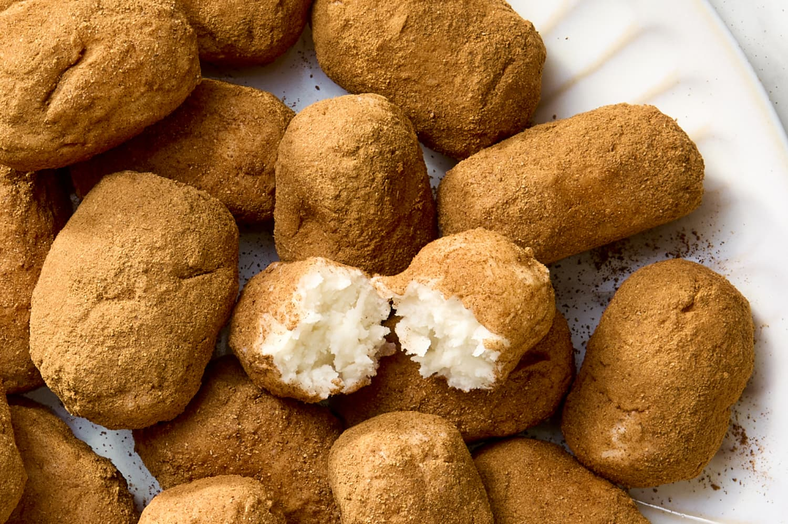

Irish Potatoes

Description
This is a recipe local to the greater Philadelphia area. It is a delicious snack of
sweet and creamy coconut balls covered in cinnamon. It's a common treat found around
St. Patrick's Day in particular.
Ingredients
- 1/2 stick butter, softened
- 1/2 brick cream cheese, softened
- 1 tsp vanilla extract
- 4 cups confectioners sugar
- 2 1/2 cups sweetened coconut
- 2 tsp cinnamon
Steps
-
Beat together butter and cream cheese. Slowly add confectioners sugar.
-
Add in vanilla extract.
-
Add coconut and mix until combined.
-
Roll into small balls and coat in cinnamon. Keep refrigerated.